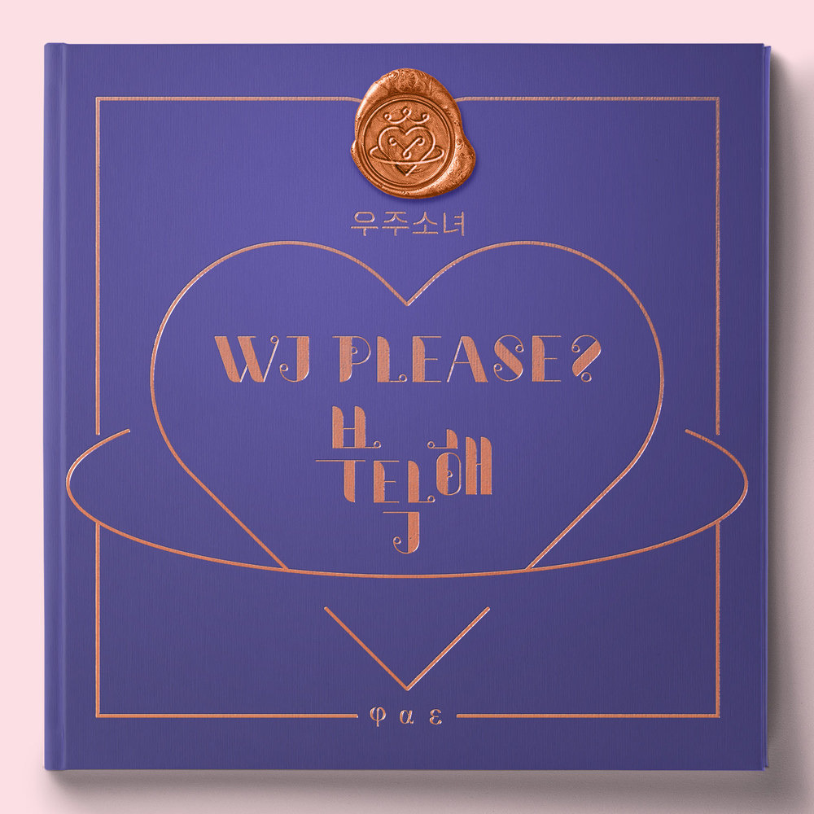

안녕하세요, 라보엠입니다.
오늘은 우주소녀(WJSN)의 대표곡 ‘부탁해(Save Me, Save You)’를 소개해드리겠습다. 2018년 발매된 미니앨범 [WJ PLEASE?]의 타이틀곡으로, 우주소녀만의 신비롭고 몽환적인 세계관과 한층 성숙해진 음악적 색채를 동시에 느낄 수 있는 곡입니다. ‘부탁해’는 발매 당시 우주소녀의 새로운 도약을 알리는 신호탄이었고, 지금도 많은 팬들에게 특별한 의미로 남아 있습니다.

우주소녀 부탁해 - 신비로운 세계관과 콘셉트의 힘
‘부탁해’는 우주소녀 특유의 ‘마법학교’ 세계관을 바탕으로, 현실과 판타지의 경계에서 소녀들이 서로에게 손을 내미는 이야기를 담고 있습니다. 곡의 무대와 뮤직비디오에서는 우주와 별, 마법과 같은 상징적인 이미지들이 반복적으로 등장해, 듣는 이로 하여금 마치 한 편의 애니메이션을 보는 듯한 느낌을 줍니다. 이 곡의 가사는 상황이나 관계가 명확하게 드러나지 않지만, 그만큼 다양한 해석과 상상을 가능하게 하며, 불확실한 감정과 간절한 바람이 선명하게 드러납니다.
‘부탁해’는 영롱한 신스 사운드와 드라마틱한 전개, 그리고 우주소녀 멤버들의 맑고 청아한 보컬이 어우러진 댄스 팝 곡입니다. 곡의 도입부부터 신비로운 분위기가 감돌고, 후렴구에서는 한층 더 감정이 고조되며, “Save me, Save you”라는 반복적인 후렴이 강한 인상을 남깁니다. 안무 역시 곡의 서사와 어우러져, 마치 주문을 외우듯 손짓과 동작 하나하나에 의미를 담아내고 있습니다.
특히 설아, 연정, 다원 등 보컬 멤버들의 섬세한 감정 표현과, 엑시의 랩 파트가 곡의 긴장감을 더합니다. 퍼포먼스에서는 멤버들이 우주를 배경으로, 신비로운 색감과 조명 아래에서 펼치는 군무가 곡의 분위기를 극대화합니다.
우주소녀 부탁해 - 가사에 담긴 소녀의 간절함
부탁해 너의 얘길 들려줄래
알고 싶어 그래 (ooh-ooh)
네가 내게 그랬듯 늘 말했듯
조심히 따스히 안아줄게
우리 서로 몰랐던 지나쳤던
시간은 모른 척 눈감을게
내 손 끝에 걸린
너의 눈, 너의 코, 너의 입술
꿈에 젖은 지난 날
아니 더 이상 혼자가 아니라고
기적처럼 넌 말해
부탁해 너의 얘길 들려줄래
알고 싶어 그래
숨기려 하지 마
너의 편이 돼 줄게
목소릴 따라 너의 호흡을 따라
다 전해져 어떤 아픔 어떤 슬픔
내게 말해줘 어서 말해줘 (save me)
그래 우린 이렇게 가까워져 조금씩
내게 말해줘 감싸 안고서 (save you)
너와 나의 귓가에 맴도는 말
Save me, save you
다치지 않게 조심스럽게
여린 널 지켜줄게
작은 손짓에도 알 수 있어
네 맘 속 깊은곳
아픈 기억은 다 no more
감싸 안아줄게 이제 말해줄래 널
내 맘을 두드린 떨림과
애틋한 너의 미소
난 왜 익숙한걸까
왠지 너와 나 이렇게 몇 번이고
만난 것만 같은데
부탁해 너의 얘길 들려줄래
알고 싶어 그래
숨기려 하지 마
너의 편이 돼 줄게
목소릴 따라 너의 호흡을 따라
다 전해져 어떤 아픔 어떤 슬픔
내게 말해줘 어서 말해줘 (save me)
그래 우린 이렇게 가까워져 조금씩
내게 말해줘 감싸 안고서 (save you)
너와 나의 귓가에 맴도는 말
Save me
같이 채워가면 돼
하나하나 예쁘게 너와 내가 함께 (oh-woah)
작은 바람에 널 뺏기지 않게
작은 바램이 맘 깊이 더 닿게
간절해 네가 더 알고 싶은 이 밤
내가 들려?
약속해 이제 우리
사이에 벽은 허물어지게
더 멀어지지 않게 다가갈게
너를 잘 알아 느낄 수 있으니까
다 전해지니까
부탁해 너의 얘길 들려줄래
알고 싶어 그래
숨기려 하지 마 너의 편이 돼 줄게
(돼 줄게)
목소릴 따라 너의 호흡을 따라
(전해지니까)
우리 서로 몰랐던 지나쳤던 시간까지
너를 잘 알아 느낄 수 있으니까
‘부탁해’의 가사는 서로에게 마음을 열고 다가가고 싶은 소녀의 간절한 바람을 담고 있습니다. “부탁해, 너의 얘길 들려줄래, 알고 싶어, 그래 네가 내게 그랬듯”이라는 구절처럼, 상대방의 진심을 듣고 싶고, 서로를 더 알고 싶어 하는 마음이 반복적으로 드러납니다. “조심히 따스히 안아줄게, 우리 서로 몰랐던 지나쳤던 시간은 모른 척 눈감을게”라는 부분에서는, 아직 서툴고 불안하지만 용기를 내어 다가가려는 소녀의 진심이 느껴집니다.
이 곡의 가사는 판타지적 배경과 현실의 감정이 교차하며, “Save me, Save you”라는 주문처럼 서로가 서로에게 구원이 되어주길 바라는 소망을 담고 있습니다. 그래서 듣는 이로 하여금 자신만의 해석과 감정을 덧입힐 수 있게 합니다.
맺음말
‘부탁해’는 우주소녀의 음악적 성장과 변화를 보여주는 곡이기도 합니다. 데뷔 초의 상큼하고 발랄한 이미지에서 한층 성숙해진 모습으로 돌아온 우주소녀는, 이 곡을 통해 소녀와 숙녀의 경계에 선 복합적인 감정을 노래합니다. 멤버들은 인터뷰에서 “이번 앨범은 소녀와 숙녀의 중간 지점”이라고 밝히기도 했죠. 그래서 ‘부탁해’는 성장통을 겪는 모든 이들에게 공감과 위로를 건네는 곡으로 남아 있습니다. ‘부탁해’는 신비로운 사운드와 감성적인 가사, 그리고 우주소녀만의 독특한 퍼포먼스가 어우러진 명곡입니다. 듣는 이로 하여금 자신의 마음을 돌아보게 하고, 때로는 용기를 내어 누군가에게 손을 내밀고 싶게 만드는 힘이 있습니다. 오늘 하루, 우주소녀의 ‘부탁해’를 들으며, 마음속에 간직한 소중한 이야기와 바람을 다시 한 번 떠올려보는 건 어떨까요?
이 곡이 여러분의 하루에 작은 위로와 설렘이 되어주길 바랍니다.